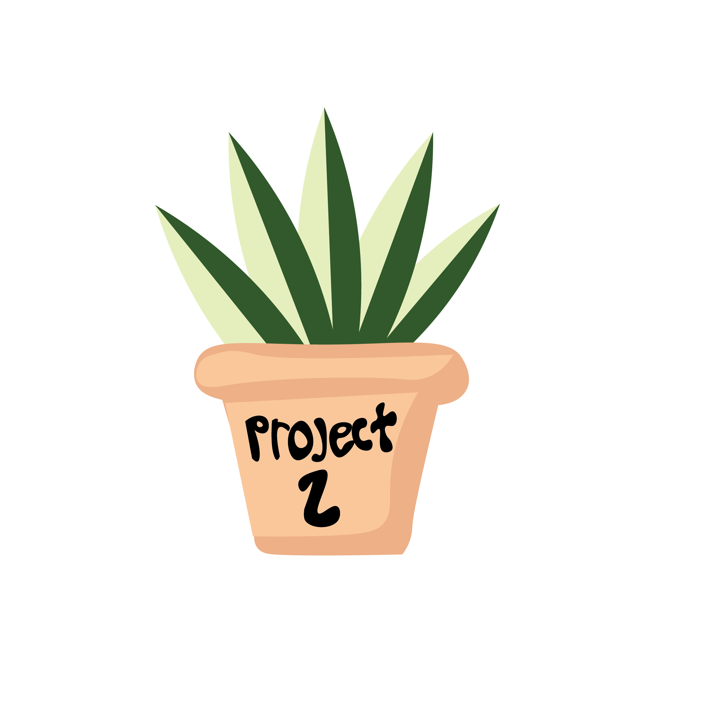
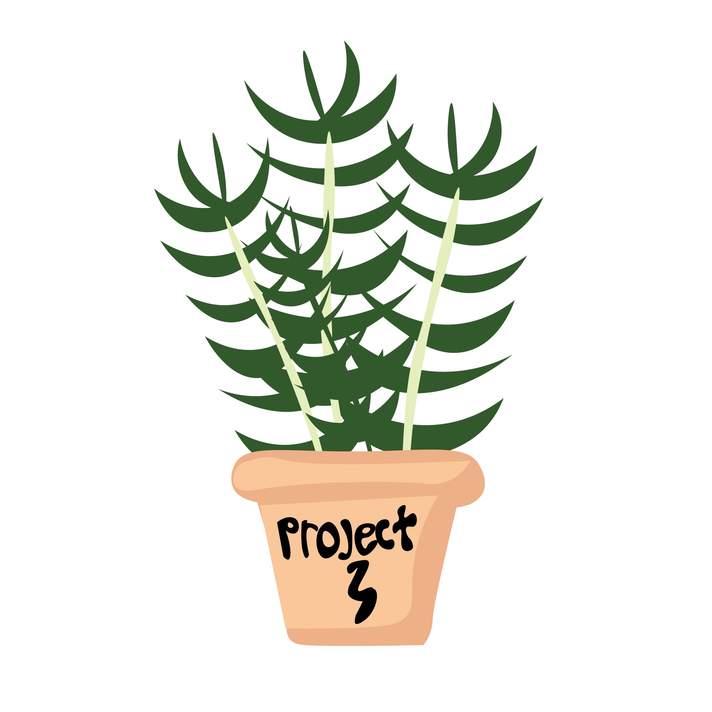
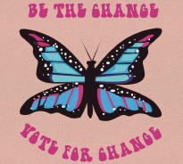
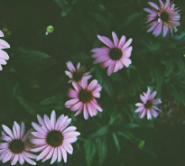
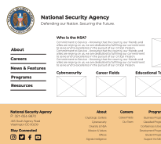

Adaptable UX designer passionate about developing digital products. Strengths in creativity, teamwork, and building projects from ideation to execution. Creates an elevated UI experience, highlighting a brand through UX research to perfect the final design. With a background in graphic design, video and photography and a recent graduate of University of Denver UX/UI Boot Camp. An asset to any team being a visual designer with various backgrounds to make cutting-edge designs.
MY WORK
Nonprofit Redesign: Girls Rock Denver
Girls Rock Denver is a Denver-based non-profit organization that empowers girls and gender expansive youth through music education, creation, performance and community. The goal of this project was to redesign the Girls Rock Denver website to have information hierarchy, responsive design and interactive characteristics.

Mobile App Ideation and Design: Companion
Companion App was ideated to help make an all-in-one adoption app that is user friendly and in the end gets more dogs adopted. The task was to find a problem and create a solution through a mobile app. Utilized the design process to empathize/research, define, ideate, prototype and then test our solution through multiple user interviews.

Government Site Redesign: National Security Administration
This project had a focus on the design process and focused on research from start. We found through the research that many individuals were having issues with accesiblity to the NSA site. This makes it more difficult for the user to find what they need and have a positive experience. The end goal was to make the National Security Association website more accessible and usable to individuals who do not work directly in cybersecurity.
MY SKILLS

Graphic Design
Adobe Illustrator, Adobe Photoshop, Adobe InDesign, Adobe Creative Suite, Collaboration, Interpersonal Relationships, Sketching, Aesthetics, Attention to Detail, Creative Brainstorming, Critical Thinking, Logo Creation, Modifying Designs, Layout, Choosing Fonts, Various Illustrations

Photography/Video Production
Adobe Premiere, Final Cut Pro, Adobe Lightroom, Video Editor, News Control Room Experience, Adobe Audition, Celtx Background, Final Draft 10, Photo Editing with Presets, Portrait Photography, Nature Photography, Dropbox, Detail Oriented

UX/UI Design
Figma, Miro, Storyboarding, Persona Creation, User Need Identification, Insight Synthesis, Decision Flow Diagrams, Interaction Design and Iconography, UI Grids and Composition, GitHub, CSS, HTML, jQuery, User-Centric Design Research, Visual Prototyping & Wireframing, User Interface Development, Adobe After Effects, Bootstrap, Adobe XD